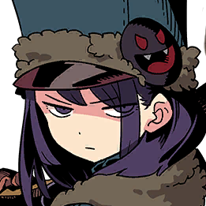
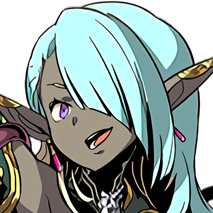
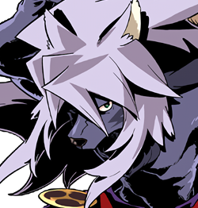
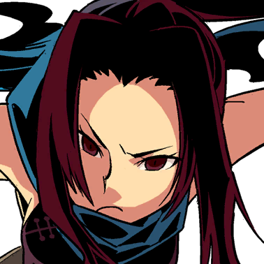

Retrouvez ici les héros et figures importantes de l’univers du Codex, joueurs et non-joueurs confondus.
Féril
Brouni enthousiaste et maladroit, il se bat avec fougue… et une pincée de chaos stratégique.

Elsa
Hache Thériane sans bannière, elle cherche une cause digne de son serment et une revanche sur l’échec.
Ithil
Médium désabusée, elle interroge les morts avec le calme de ceux qui les rejoindront bientôt.
Oktar
Guerrier au regard de feu, il tranche d’instinct et protège sans compromis. Une lame façonnée par la perte.
Kay
Tacticienne froide et lucide, elle mène comme elle joue : sans pitié, sans panique, sans pièce sacrifiable.